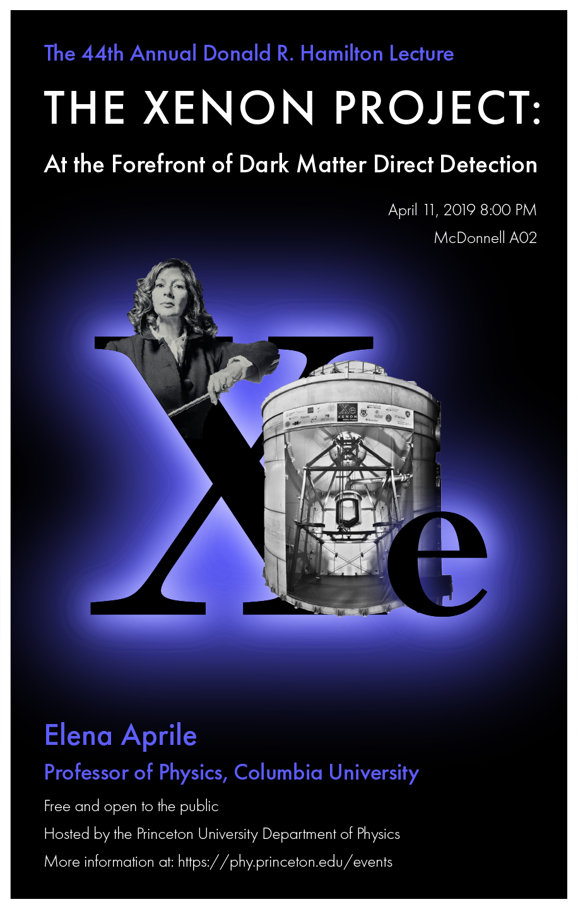
Every year, the Princeton University Department of Physics hosts an endowed series of public talks given in honor of the late Donald Ross Hamilton.
This year, they invited Professor Elena Aprile of Columbia University.
She plans on discussing how upcoming experiments will explore Dark Matter signatures during the next decade, and will focus on experiments using the most massive targets made of noble liquids, and on the XENON project in particular.
I was matched with my client through the Student Design Agency, and was asked to design a poster for this event.
These are the two images I was given to work with:
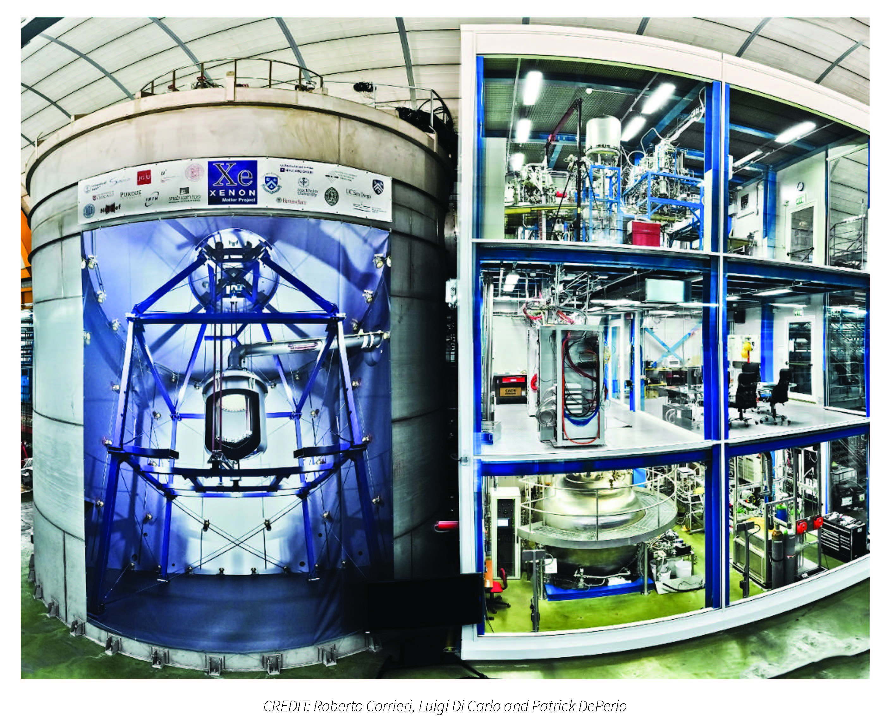
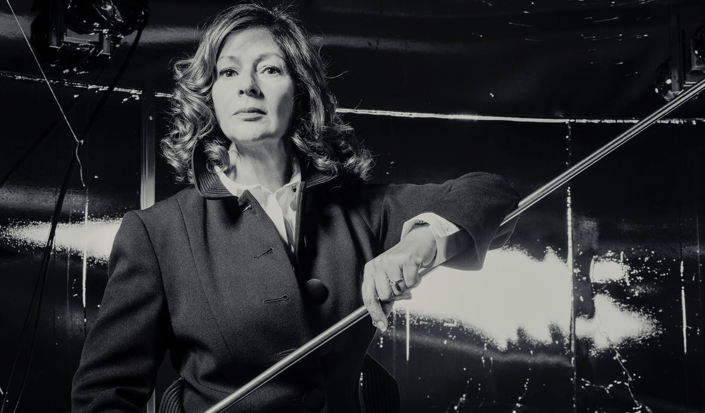
I first removed the background from these images so they could be incorporated into the poster more seamlessly. I also created a black & white version of the dark matter accelerator in order to match the style of the photo of the speaker.
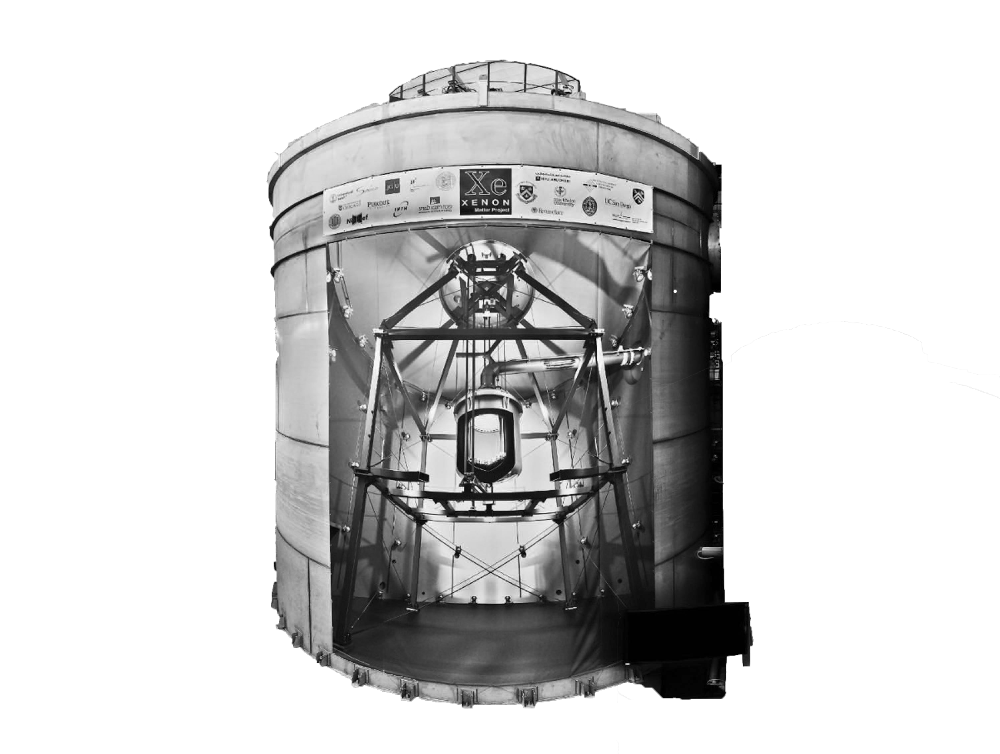
I initially had two very general ideas for the poster design.
Recently I've been looking at a lot of Gary Percival's works and have been interested in experimenting with cool text effects.
As a result, in the first version, I placed the main focus on the word "XENON".
In general, I was leaning towards the idea of having some contrast between a dark background and neon elements.
I thought that incorporating some kind of unique text effect like the one below would make the poster very eye-catching.
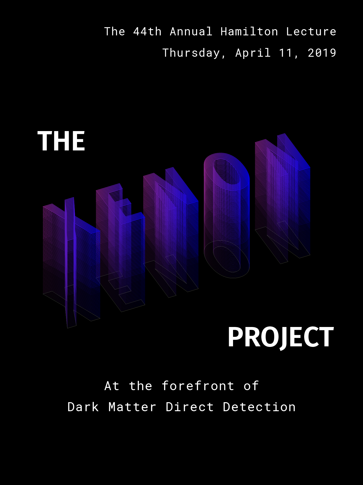
In the second version, I wished to create an interplay between the images and the letters of the chemical symbol for Xenon. I placed a photo of the dark matter detector (which I randomly pulled from the internet - this was before I received the images from my client) in such a way that it almost appears to be growing out of the letter "X". I also thought it would be super cool to have a photo of the speaker growing out of the other side of the "X". This version seemed to be a better way to incorporate images into the poster.
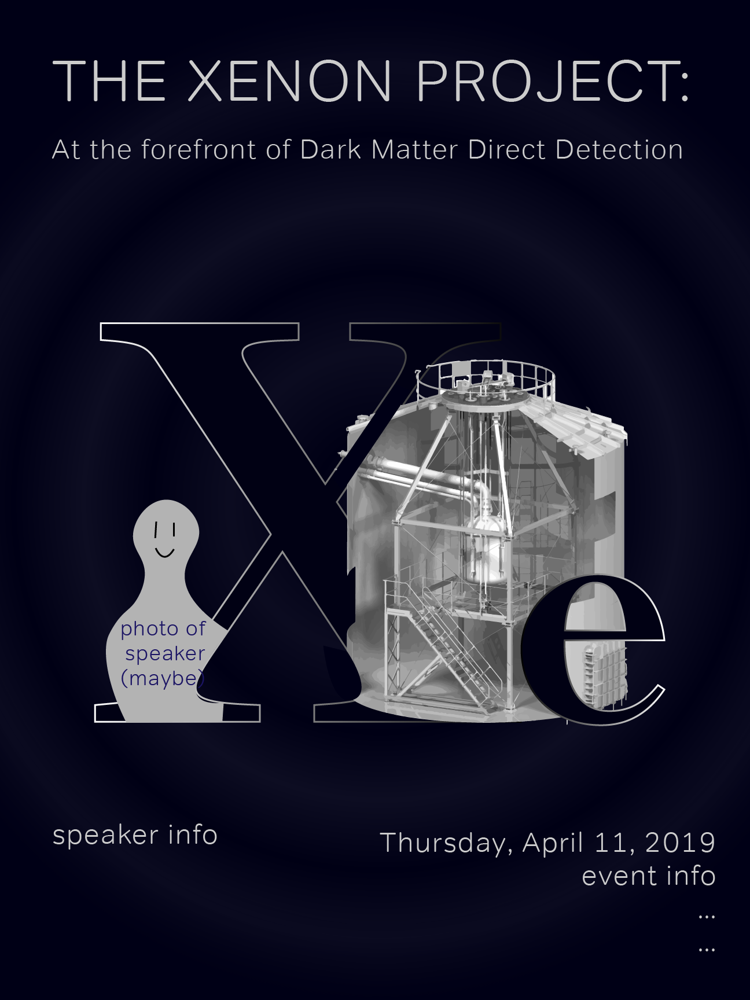
I sent both of these sketches to my client and asked for her opinion.
She ended up really liking my second version (as I had hoped - yay!), so I decided to build on that one.
I also received some more specifics about the event to include in the poster.
Here is my very first iteration of the poster.
It's a bit rough but it encompasses the general idea I was going for.
I decided on a san-serif typeface (Helvetica) in order to provide a distinction from the font used in the graphic.
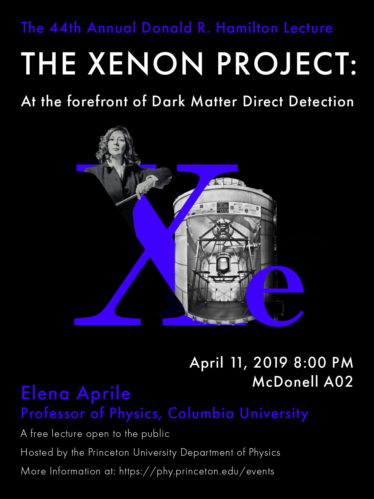
I didn't really like the blue I was using, so I added a more purplish tone and lightened it a little bit so it's easier to see.
I also thought the central graphic may look a bit more sophisticated if the "Xe" was black instead of blue.
I made sure to delineate it, however, with a white stroke and a blue glow so it didn't get lost in the background.
I also moved the date/time/location of the event so the viewer wouldn't be overwhelmed by the massive amount of information concentrated at the bottom.
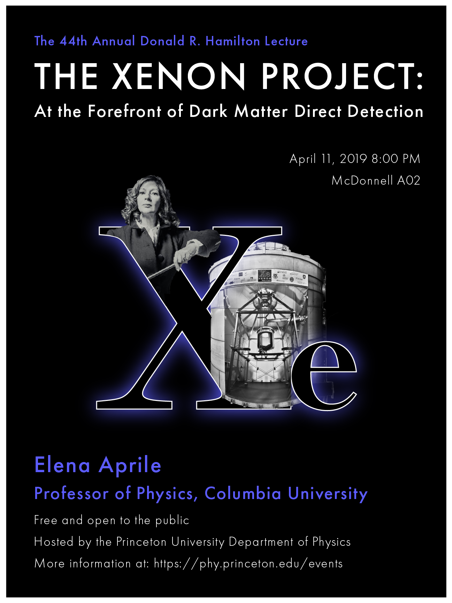
Then I intensified the glow a little bit.
I experimented with a white spirally thing in the background that kind of reminded me of a black hole but I ended up finding it too distracting.
Here is the draft I sent to my client:
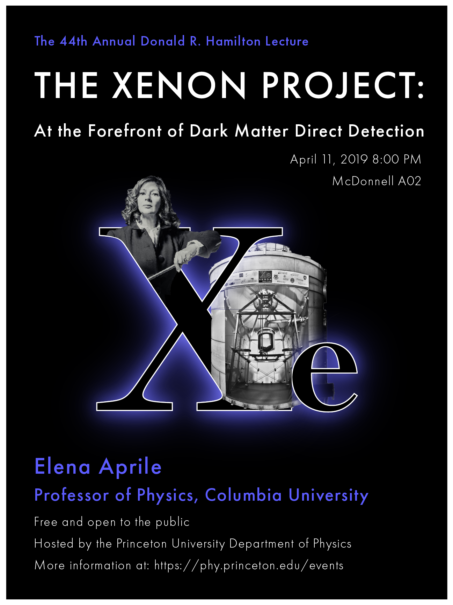
I popped my draft into the feedback channel of the Student Design Agency slack so I could get some more opinions! My favorite thing (and something I find the most helpful) when designing is sharing my ideas with other people and getting constructive criticism. Here are some responses I got:
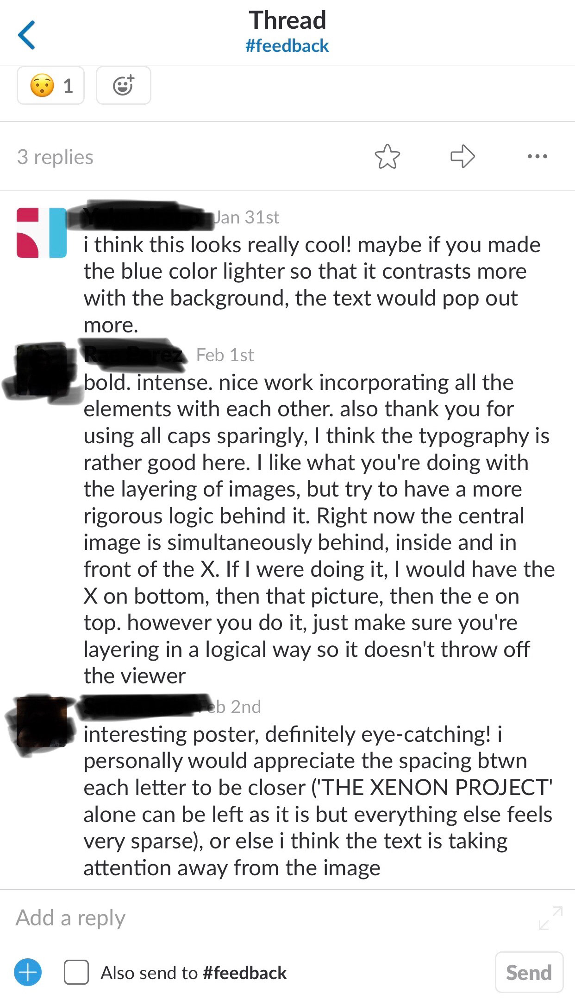
I 100% agreed with the first comment, and began thinking of ways to make the text pop out more.
I tried lightening the blue but didn't enjoy how pastel-y it looked, so I ultimately decided to intensify the glow around the "Xe" to help emphasize it even more.
I also moved the image of the dark matter detector a bit so it is layered a bit more logically, as the second commenter said.
Although I liked how it was intertwined with the "X" originally, I agree that this makes more sense. I was really glad that she pointed that out.
Finally, recently I've been recognizing that I have a habit of using spaces between letters quite liberally.
I agreed with the third commenter that I may have gone a tiny bit overboard in this case.
So, I decided to tone it down just a little.
Now here's my final product! I am super happy with how it turned out. :)
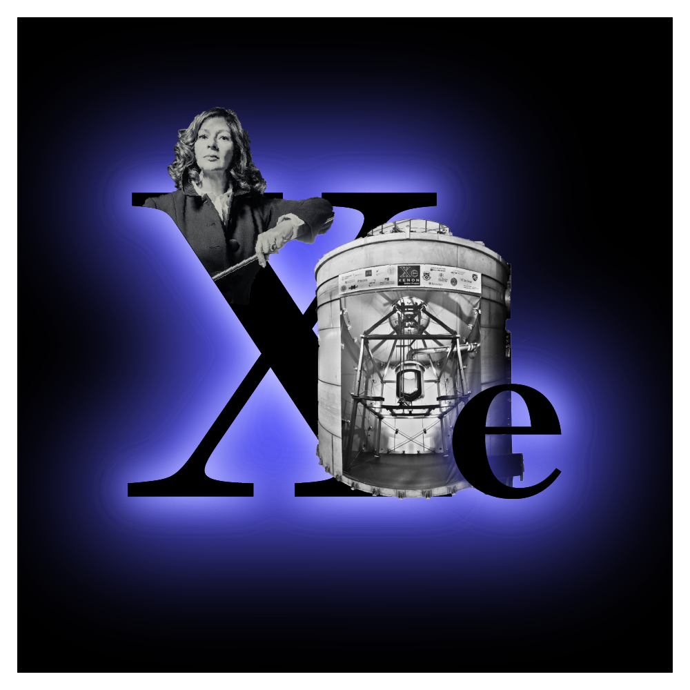